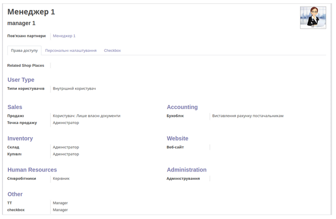
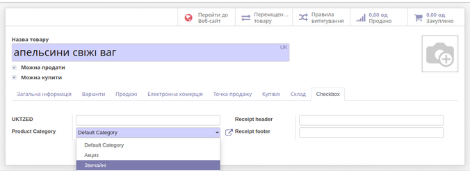

1. Registration of the organization on the site "Checkbox".
Organizations must be registered on the Checkbox site with an
electronic digital signature. You need to register as many
organizations as you need to create product groups. In the test
example, there are two, for alcohol and food separately. After
registration, you will receive a separate file for each
organization with logins, passwords and keys to the virtual cash
register.
2. Launch the Checkbox Signature application.
2.1. Enter data from the file in the program settings. Pay attention
to the correctness of the entered link and be sure to check the
test server, if you use it.
2.2. Leave the app running in the background while you use the
virtual cash register.
3. Creating users.
3.1. Administrator
Can see all documents, transactions, outlets, change settings,
create and delete all entities.
The default login: odoo, password: must be set via "Settings" -
"Users".
In all parameters note that he is an "administrator".
3.2. Manager.
Can see only his (those relating to outlets in which he is a
manager) documents, transactions, outlets. Cannot change settings,
create and delete all entities in the program.

3.3. Seller.
Can only see your store, open and close the session. Make sales. He
has no rights to edit, add or delete.
4. Creating a cashier.
4.3. Go to: “CheckBox” - “Settings” - “Cashier”.
4.4. Click "Create".
4.5. Fill in the Username and Password fields with data from the
file - the key of the virtual cash register ..
4.6. Select users who will be able to use this virtual cashier.
4.7. Click "Save".
4.8. Click "Update info".
4.9. After that all other necessary data are pulled up in the
cashier's card. Including the organization for which the checkbox
is registered.
5. Creating a cash register.
5.1. Go to “CheckBox” - “Settings” - “Cash registers”.
5.2. Click "Create".
5.3. Select the organization that pulled up to the checkbox card,
after completing its registration in paragraph 4.
5.4. Enter the license key.
5.5. Set min and max number of codes for fiscalization. These codes
are used to fiscalize transactions when the electronic cash
register is offline or unavailable for some reason. When access to
the electronic cash register via zin codes, all transactions will
be fiscalized and receive QR-codes. The number of required codes is
determined by the number of operations per unit time and is set by
the managers manually. The program will order codes when their
number becomes less than specified and will order so much that the
quantity is equal to the maximum specified.
5.5. Click "Save".
5.6. Click "Update info".
5.7. After that all necessary data are pulled up in a card of the
cash register.
6. Creating categories of fiscalization of goods in CheckBox
(Product Category).
6.1. Go to: “CheckBox” - “Settings” - “Cash registers”.
6.2. Click "Create".
These are the categories of goods by which the fiscalization of
operations will be differentiated. In the test example: "Excise"
and "Ordinary".
7. Creation of goods.
7.1. Go: "Point of sale" - "Goods" - "Goods".
7.2. Click "create".
7.3. Fill in the tabs as shown in the screenshots
7.4. Select the product category.
It can be pre-created in the "Product Categories of the point of
sale".

This is usually a division into food, manufactured goods, tobacco,
alcohol and more.
7.5. In the Checkbox tab, select a fiscalization category.
7.6. Click "Save".